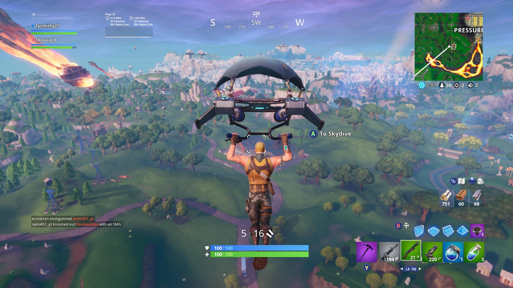

Gamer.nl: "Fortnite blijft een frisse en dynamische ervaring met regelmatige updates en evenementen."
Fortnite
Informatie
Synopsis: Fortnite is een populaire battle royale game waarin 100 spelers strijden om te overleven op een eiland. Spelers verzamelen wapens, bouwen structuren en vechten tegen elkaar terwijl de veilige zone krimpt. De game staat bekend om zijn kleurrijke stijl, unieke bouwmechaniek en regelmatige updates met nieuwe content en evenementen.
Genre: Battle Royale
Singleplayer/Multiplayer: Multiplayer
Waardering (Metacritic): 78
Uitgever: Epic Games
Uitgavedatum: 26-09-2017
Game Screenshots

Minimale Systeemeisen
- OS: Windows 10 64-bit version 1703
- Processor: Intel Core i3-3225 3.3 GHz
- Geheugen: 8 GB RAM
- Grafische kaart: Intel HD 4000
- DirectX: Versie 11
- Opslag: 60-75 GB beschikbaar
Recensies
Gamespot: "Een zeer populaire battle royale game met een unieke stijl en veel creatieve mogelijkheden."
IGN: "Hoewel het een solide battle royale ervaring biedt, kunnen de graphics en prestaties variëren afhankelijk van het platform."